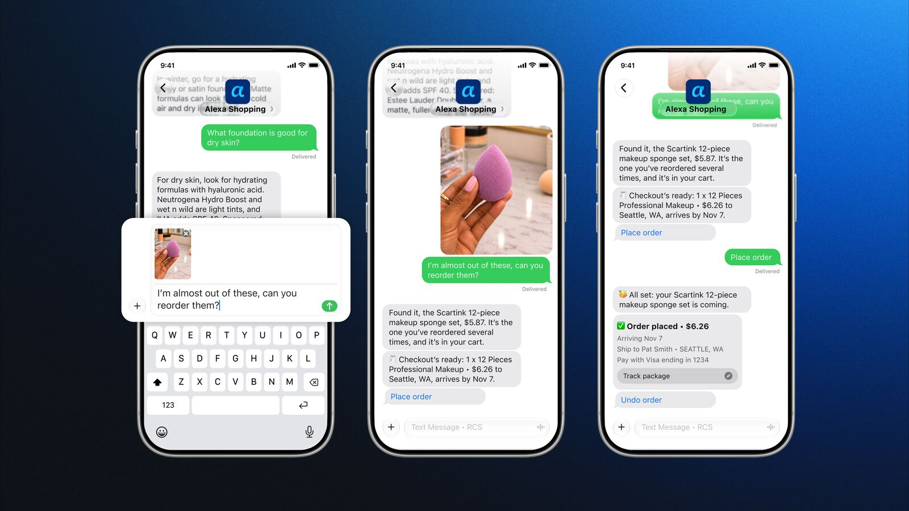

科技產品 T1

Amazon官方產品示範圖；不是本報購物或付款實測。 Amazon／About Amazon
Amazon 開放受邀美國用戶以簡訊操作 Alexa 購物，搜尋、重新下單與追蹤訂單可在同一對話完成
發佈時間
Amazon／Alexa for Shopping 簡訊通道
Amazon讓部分美國客戶透過文字訊息與Alexa for Shopping互動，接受條款並綁定手機號碼後，可搜尋、比較與核准購買。
- 初期限美國部分受邀客戶，未受邀者可登記；官方預計未來數週擴大，並非全球全面開放。
- 可傳照片找相似商品、查訂單及重購；官方重購例子明列須經使用者核准。
- 官方正推出跨簡訊、購物App、網站與Alexa裝置延續對話的能力。
完整報告收合報告
事件背景與影響
購物代理從網站與App延伸到訊息介面，交易授權及個人偏好資料也因此更需清楚管理。
事件與發佈依據
官方原文metadata為11/6 13:55:08Z，宣布當日起分批邀請；不是既有購物助理首次推出。
收錄紀錄
10/24至11/6十四份日報查Alexa購物簡訊無命中，同窗31列產品表也無此獨立通道變更。
尚待確認
官方操作圖為示範，不是本報交易實測；既有價格追蹤與自動購物能力不全是今日首次推出。未確認台灣開放、每個帳號資格或各電信商條件，不能保證所有邀請訊息都是真實。
相關實體與概念
Amazon、Alexa for Shopping、簡訊、購物代理、綁定電話、交易授權。
科技產品 T2
Panasonic 11/6公告之RB-HJ800三色產品圖，非其他Technics型號。 Panasonic官方產品公告
Panasonic 發表 RB-HJ800 無線耳機，標榜開啟降噪仍可播放約七十二小時
發佈時間
Panasonic／RB-HJ800
RB-HJ800以長續航及日本傳統配色切入無線耳機市場，官方稱關閉降噪約100小時、開啟降噪約72小時。
- 配備40mm單體，機身按鍵可切換低音增強，並可折疊收納。
- 三色為漆黑、白練與梅染；官方日本網店列含稅14,850日圓，建議售價採開放價格。
- 新聞稿寫十一月中旬，產品頁列11/18，部分日本店家與媒體列11/19，供應日期仍須向通路確認。
完整報告收合報告
事件背景與影響
長途使用可降低充電頻率，但續航與舒適度仍須在實際音量、連線與使用條件下驗證。
事件與發佈依據
日本官方11/6具名公告新型號，預定十一月供應；不把未來上市日當成已到貨。
收錄紀錄
十四份日報查RB-HJ800無命中，核對同窗31列產品表亦未收，採本次獨立產品公告。
尚待確認
100小時不是開降噪成績，兩種測試設定不能混用；本報未試聽或測電池。官方不同頁面與通路日期不一致，不能據此宣稱台灣已上市或換算為台灣售價。
相關實體與概念
Panasonic、RB-HJ800、主動降噪、續航、40mm單體、日本市場。
全球焦點 1
川普宣布由 Stephen Miller 接任白宮幕僚長，Susie Wiles 將轉往政治團隊
發佈時間
川普宣布長期幕僚Stephen Miller將接替Susie Wiles掌管白宮幕僚工作，預定下週一交接。
- Miller原任副幕僚長，長期參與移民與其他國內政策。
- 川普公開稱Wiles工作出色；白宮官員向Reuters稱她將轉往川普政治團隊。
- 公告與實際就任不同，不能把11/9生效寫成11/6已完成全部交接。
完整報告收合報告
事件背景與影響
幕僚長負責協調政策與白宮運作，人事變動發生在共和黨失去國會控制權後，將影響與新國會的互動方式。
事件與發佈依據
Reuters11/6 14:01美東刊登當日任命公告，新職預定11/9生效。
收錄紀錄
十四份日報無此人事公告；期中選舉結果是背景，不再以原結果占名額。
尚待確認
官員對政策將更強硬的判讀是預期，不是新法律已生效；Wiles離職的動機有不同敘述，本文區分公開說法與匿名官員資訊。
相關實體與概念
Donald Trump、Stephen Miller、Susie Wiles、白宮、幕僚長、分立政府。
全球焦點 2
續報｜卡達宣布元首與川普通話推動區域降溫，美伊核議題仍未形成公開協議
發佈時間
卡達元首Tamim與川普討論外交降溫及調停，卡方強調對話、航行自由與能源供應安全。
- 卡達聲明稱雙方討論促成全面解決危機的調停努力。
- 卡方同時提及兩國戰略關係，並主張持續外交方式防止升高衝突。
- Reuters另引匿名伊朗官員稱已透過卡達送交核提案，但內容與先決條件仍未公開確認。
完整報告收合報告
事件背景與影響
最高層接觸使調停維持管道，但電話會談本身不等於停火、解除封鎖或核協議已落實。
事件與發佈依據
Bernama／Anadolu11/6 19:56馬來西亞時間報導卡達王室當日通話聲明。
收錄紀錄
11/1已收伊朗代表赴杜哈；本次新增11/6卡達元首與川普實際通話及其公開議程，不是重刊代表團行程。
尚待確認
官方通話確認與匿名人士對提案的說法證據強度不同；各方對核議題與制裁先後次序仍有分歧。未宣稱美伊已直接談判、達成協議或海峽恢復全面通航。
相關實體與概念
卡達、Tamim bin Hamad Al Thani、川普、伊朗、調停、航行安全。
全球焦點 3
美國公布十月新增十六萬五千個非農職位，失業率為百分之四點一
發佈時間
美國非農就業十月增加165,000，失業率4.1%；八月與九月合計上修84,000個職位。
- 專業與商業服務增加70,000個職位，醫療及運輸倉儲也成長。
- 民間非農平均時薪月增0.4%、年增3.1%。
- 九月就業由原估29,000修正為60,000；新增值與修正值不可相加當十月增量。
完整報告收合報告
事件背景與影響
數據提供勞動市場與貨幣政策的新判讀基礎，但單月增加不能推論每個行業或家庭情況都改善。
事件與發佈依據
BLS11/6 08:30美東解禁公布十月就業報告；統計月份不是新聞發布日期。
收錄紀錄
十四份日報未收本次十月就業統計，其他國家利率或舊就業背景不構成相同事件。
尚待確認
非農與失業率來自不同調查，後續仍可能修正。市場預測機構的共識不同，不以單一預測誤差代替數據，也不把本次發布當作已宣布升降息。
相關實體與概念
美國勞工統計局、非農就業、失業率、薪資、統計修正、聯準會。
全球焦點 4
台股收盤跌一千八百七十三點失守四萬點，金管會宣布十一月九日起調整放空相關措施
發佈時間
加權指數收39,701.64點，跌1,873.08點、4.51%；金管會隨後公布借券賣出與融券保證金調整。
- 成交值約新台幣1兆2,461億元，盤中最大跌點為3,737.67點，與收盤不同。
- 台積電收2,135元、跌105元，不是把盤中跌停價格當收盤。
- 11/9起借券賣出每日盤中委託數量上限由前30日均量30%降至3%，最低融券保證金由90%升至130%。
完整報告收合報告
事件背景與影響
市場波動與主管機關措施同時影響交易風險，盤中極端跌點不能誤寫成收盤損失。
事件與發佈依據
CNA13:48首次報當日收盤，19:15另報金管會當晚措施；不是沿用前日美股收盤。
收錄紀錄
十四報無11/6台股收盤與本次放空限制公告，與昨日Nasdaq下跌不同市場及交易日。
尚待確認
主管機關穩定措施不是保證指數回升；部分媒體歷史跌點排名不同，本文不以排名作結論。這是市場紀錄，不是買賣建議。
相關實體與概念
台灣股市、加權指數、金管會、台積電、借券賣出、融券保證金。
全球焦點 5
歐盟初步認定 TikTok 推薦系統形成有害內容迴圈，最終裁決與罰款尚未確定
發佈時間
歐盟執委會認為TikTok未充分評估與減輕推薦系統讓使用者反覆接觸悲傷、孤立或身體形象內容的風險。
- 本次是《數位服務法》下的初步調查結果，不是最終違規判決。
- 執委會提出加重使用者明確偏好、改善控制功能與定期測試等方向。
- 若最終確認違規，法定罰款上限可達全球年營收6%，並非今日已開出6%罰單。
完整報告收合報告
事件背景與影響
監管焦點不只是單篇非法內容，也及於系統如何放大風險；平台仍可答辯，程序未終結。
事件與發佈依據
Reuters11/6 06:02美東報導當日新的初步認定，非二月成癮設計調查重述。
收錄紀錄
十四份日報未收本次推薦系統風險認定；與其他平台或未成年人立法不同事件。
尚待確認
TikTok對二月另一組初步結果的反駁，不應冒充已對今天逐項回應；本報不斷言特定內容必然造成個別疾病，亦不預判最終裁罰金額或日期。
相關實體與概念
歐盟執委會、TikTok、ByteDance、DSA、推薦系統、心理健康、答辯權。
全球焦點 6
烏克蘭情報機關稱俄羅斯已在戰區使用 Rassvet 衛星通訊，現階段覆蓋仍不連續
發佈時間
烏克蘭軍事情報機關GUR向Reuters表示，俄羅斯已使用Rassvet提供軍事通訊，但衛星數量仍不足以持續覆蓋。
- GUR稱俄方今年兩批發射共32顆，俄國政府上月稱超過30顆。
- 烏方表示通訊需等待衛星經過相關區域，尚非不間斷服務。
- 俄羅斯國防部與主導專案的Bureau1440未立即回覆Reuters詢問。
完整報告收合報告
事件背景與影響
低軌衛星通訊可能改變無人機即時資料交換與抗干擾條件，但不能直接等同已達Starlink規模或所有作戰能力。
事件與發佈依據
Reuters11/6 09:32美東首報烏方當日提供的具體軍事使用說法，不把三月與七月發射當今日事件。
收錄紀錄
十四份日報未收Rassvet已用於烏克蘭戰區這項披露，其他俄烏攻擊不是相同事件。
尚待確認
軍事使用與可能改善無人機能力主要來自交戰方說法，實際覆蓋、精準度與抗干擾表現未經本報獨立測試；不把規畫衛星數寫成已部署數。
相關實體與概念
烏克蘭、GUR、俄羅斯、Rassvet、Bureau1440、低軌衛星、軍事通訊。
全球焦點 7
續報｜歐洲新一波炸彈威脅波及更多航班與媒體機構，撤離與安全檢查持續
發佈時間
新一波威脅再干擾歐洲航空，RTÉ等媒體亦撤離與接受警方檢查，部分節目受到影響。
- UPI報導當日又有至少18航班受影響，愛爾蘭政府稱是協調性的干擾行動。
- RTÉ辦公室撤離，英國Sky也表示收到安全威脅並通報主管機關。
- 受影響航空器安全降落，已完成搜索者未發現爆裂物。
完整報告收合報告
事件背景與影響
民用設施即使未找到爆裂物，也需投入大量警力與營運成本；來源與跨案關聯仍待調查。
事件與發佈依據
Guardian可見首次時間11/6 08:34美東，UPI同日13:41美東交叉報導當日新航班及媒體撤離。
收錄紀錄
11/6日報收11/5至少25班受影響；新增11/6至少18班與愛爾蘭、英國媒體威脅，不相加成獨立查證的總數。
尚待確認
威脅郵件自稱的身分未獲驗證，不能據此認定特定國家或團體負責；與冷凍系統網攻是否相連也未證實。不同時點航班統計不混成同一快照。
相關實體與概念
歐洲、航空安全、RTÉ、Sky、炸彈威脅、媒體撤離、公共設施。
全球焦點 8
肯亞法院判 Paul Mackenzie 二百年徒刑，本次量刑涉及一百九十一名受害者
發佈時間
蒙巴薩高等法院就190名兒童與一名成人死亡案，判宗教團體領袖Paul Mackenzie總計200年徒刑。
- Sky報導兩段各100年刑期連續執行，區分飢餓及其他直接致死方式。
- 本案191人與事件相關超過400名死者是不同範圍，不可互換。
- 辯方表示將上訴，另有其他控罪仍在處理。
完整報告收合報告
事件背景與影響
重大案件由定罪進入量刑，但其他案件及上訴仍各有程序，不能把所有相關死亡都當作本案已判完。
事件與發佈依據
AP11/6 11:52:08Z報導當日判刑；10/19定罪及2023發現遺體是背景。
收錄紀錄
十四報查Mackenzie、麥肯齊及肯亞教派判刑無命中，不查更早報告；本次採11/6量刑節點。
尚待確認
不同稿對共同被告人數及法官姓名有差異，本報不採爭議細節；200年是宣布刑期，不是斷言全部救濟程序已結束。避免重述不必要的受害者細節。
相關實體與概念
肯亞、蒙巴薩、Paul Mackenzie、Shakahola、刑事量刑、兒童保護、上訴。
全球焦點 9
抗議者進入阿姆斯特丹微軟資料中心工地，AI 基礎設施的地方衝突升高
發佈時間
Reuters記者目擊約100人進入阿姆斯特丹一處微軟資料中心建案工地；示威涉及能源及地方資源等爭議。
- 抗議團體Geef Tegengas參與，部分人翻越圍籬並攀上起重機。
- Euronews報導警方介入、多人被捕；進入工地人數與外圍總參加者口徑不同。
- Microsoft與Pure Data Centres表示尊重和平抗議，但反對非法或危及安全的行動。
完整報告收合報告
事件背景與影響
算力擴張的社區協商與施工安全成為具體營運問題，抗議立場不等於建案已被依法停止。
事件與發佈依據
Reuters11/6 05:39美東現場目擊報導當日進入工地行動，不把較早抗議預告當新事件。
收錄紀錄
十四報Amsterdam命中為10/26風暴與機場，與本次資料中心建案抗議無關。
尚待確認
抗議者對耗電規模的比較未獨立核實，本文不當成確定數字；不同團體與外圍和平示威不應混為同一行動或一律定性。
相關實體與概念
Amsterdam、Microsoft、Pure Data Centres、Geef Tegengas、資料中心、能源、地方治理。
全球焦點 10
Fox 宣布完成 Roku 併購，串流平台承諾維持開放、原股票停止交易
發佈時間
Fox完成收購Roku，將其與Tubi、FOX One等納入數位平台布局；Roku股票自當日起停止Nasdaq交易。
- 官方表示Roku會持續作為開放平台，服務全球超過一億家庭。
- Roku創辦人Anthony Wood加入Fox董事會，並與Paul Cheesbrough共同領導新數位平台部門。
- 原Roku每股對價為95.30美元現金加0.9799股Fox A類股，非全部現金收購。
完整報告收合報告
事件背景與影響
內容商與連網電視平台結合，可能改變廣告與分發市場，但保持平台開放仍須觀察後續實施。
事件與發佈依據
Fox官方11/6宣布交易完成，不是較早合併協議或預計2027完成的重刊。
收錄紀錄
十四份日報無Roku本次交割事件；金額與舊協議背景不單獨當新產品。
尚待確認
官方預期成本綜效是未來目標，不是已節省的支出；股權交易完成不等於App功能、訂閱價格或內容推薦已立刻改變。
相關實體與概念
Fox Corporation、Roku、Tubi、FOX One、連網電視、串流廣告、併購交割。
研究備註
時間、來源與後續追蹤
研究截點 2026-11-07 07:59:28（Asia/Taipei）
研究時間與範圍
研究截點：2026-11-07 07:59:28（Asia/Taipei）。全球新聞：2026-11-06 07:59:28 至 2026-11-07 07:59:28（Asia/Taipei）。科技產品：2026-10-24 07:59:28 至 2026-11-07 07:59:28（Asia/Taipei）。